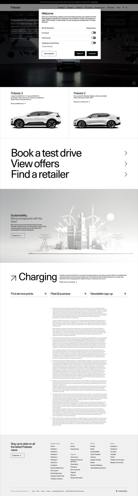

Polestar — current state
Descriptive snapshot of the live Polestar US home page. Used as the input to a brand-faithful redesign. Renders in the brand's own captured palette and typography.
_brand-extraction.json.
Palette
Aggregated from _brand-extraction.json § palette. The captured site is functionally monochrome — black, white, and five greys — with one accent (#FF7500) used as a 2 px hover underline only. The configurator green and offline red live in CSS but never surface on the home page.
Source: _brand-extraction.json § palette. Greyscale flagged — see Tensions.
Typography
Source: _brand-extraction.json § type. One family (Polestar Unica), one weight (regular). Scale audit: ad-hoc — observed sizes 12 / 16 / 30 / 48 / 110, no canonical ratio. The home-page H1 actually renders at 30 px, identical to most H2 / H3 — see Tensions.
Components
Buttons: primary #000 / #fff / 0 px radius / 16 × 24 padding. Secondary 1 px black inset border. Hover: 2 px #FF7500 underline via box-shadow.
Motifs
- Sharp rectangles.Border-radius effectively 0 px across cards, buttons, surfaces. Pill / 50% reserved for icons and status dots.
- Single-typeface single-weight.Polestar Unica regular at 12 / 16 / 30 / 48 / 110 px — no italic, no caps treatment, no bold contrast in body copy.
- Photography on flat ground.Cars on white / pale grey, side-profile, no environment, no people. The vehicles are the only colour on the page.
- Promo-strip → mega-nav → product row.Commerce-spine IA. Hero is a single model spotlight; row of 4 model cards sits directly below it.
- Single orange accent.
#FF7500as 2 px underline-on-hover. No fill use, no large surface use. - Footer-mega 5-column.Explore & buy / Shop / Support / About / Social.
Voice
Source: _brand-extraction.json § voice. Tone reading: bold-direct — two-word imperatives, full-stop fragments, product-name-as-headline. Volvo-Scandinavian minimalist register.
CTA frequency (home page)
| Label | Total |
|---|---|
| Discover | 4 |
| Test drive | 3 |
| Shop available cars | 3 |
| Shop pre-owned cars | 3 |
| Configure | 2 |
| Offers | 2 |
| View offers | 1 |
Source: _brand-extraction.json § voiceTable.ctaFrequency. The buy-path verbs (Discover / Test drive / Configure / Shop) anchor the IA. Learn more is absent — Polestar refuses the verb.
System components
- site-header (mega-nav)Polestar 2 / 3 / 4 / Pre-owned / Shopping tools / Ownership / More — each model name opens a dropdown with Discover / Test drive / Offers / Configure / Shop.
- site-footer (mega 5-column)Explore & buy / Shop / Support / About / Social with newsletter signup above the legal row.
- incentive-strip"Combine lease and purchase offers with incentives available until April 30th. View offers." Thin band at the very top of the page.
Tensions
Detector triggers (run mechanically per brand-review-template.md § Detectors). These are descriptive, not corrective — the redesign target decides whether to keep, soften, or fix.
Hero H1 is the same size as section H2 and most H3.
Captured H1 ("Polestar 4. Choose better.") renders at 30 px. Captured H2s ("Polestar 3", "Sustainability.", "Charging") also render at 30 px. There is no display tier in the live page hierarchy — the configurator and cookie modal are the only places where the 48 / 110 px display sizes appear. On a brand whose proprietary face (Polestar Unica) reads beautifully at scale, this is restraint past the point of discipline.
Trigger: heading sizes show no monotonic decrease across H1→H6, and the H1 is within 10% of the H2 mode.
Four model cards at the same crop, the same size, the same lockup.
The home page presents Polestar 2 / 3 / 4 / Pre-owned as a uniform 4-up row of 535 × 185 wide-thumbnail cards. Each card has the same image aspect, the same title position, the same dual CTA. The page's visual rhythm is one note repeated four times — and each thumbnail is too small to do justice to the studio photography that is Polestar's strongest brand asset.
Trigger: ≥ 3 sibling cards share image dimensions within ± 5 % and identical CTA structure.
The hero treats the brand smaller than its own brand wordmark deserves.
The hero is a full-bleed autoplay video with a 30 px H1 ("Polestar 4. Choose better.") layered over it. Modern luxury auto sites (Porsche, Mercedes EQ, Lucid) routinely deploy 80–120 px display copy in the hero. Polestar's own design system reserves 110 px for the cookie banner and the configurator. The brand is shrinking itself on its own front door.
Trigger: hero H1 size ≤ 32 px on a brand-register page with a full-bleed video / image.
Five greys in the token sheet, two-and-a-half in actual rendering.
#53565a / #75787b / #b1b3b3 / #d9d9d6 / #ECECE7 are all defined as named CSS variables (--ironGrey, --stormGrey, etc.). On screen, four of them sit within ΔE < 5 of each other — a typographer or designer can't distinguish them at typical monitor brightness. The system has more colour tokens than it has colour decisions.
Trigger: ≥ 4 grey tokens with mutual ΔE < 5.
Sustainability is the brand's stated purpose, but the layout treats it as an afterthought.
The brand statement says: "determined to improve the society we live in." The Sustainability section appears below four product cards and a Tesla-conquest banner, in the same thumbnail-card format as Charging — a 535 × 182 illustration with a one-line headline. The IA orders commerce → conquest → product → values. A brand that wants to be sold on values cannot leave them at slot seven.
Trigger: the meta description's primary noun appears below the fold and below at least three commerce blocks.
The Tesla-conquest callout uses a SaaS-banner pattern on a luxury-auto page.
"Not the status quo. Tesla owners receive $14,000." is rendered as a small announcement strip under the hero. The MESSAGE is a strong conversion lever for Polestar — the PRESENTATION is a Shopify-store dashboard message. Confidence in the offer would be served by a presentation register that matches the rest of the brand surface.
Trigger: a competitor name in body copy in a thin promo strip with disclaimer footnote.
Image bank (captured URLs)
Captured from the live page. The redesign reuses these via their public URLs in the same semantic positions (hero / model card / sustainability illustration).
- hero (PS4 launch reel video) —
polestar-release-day-video-key-photo-desktop.png+ps4_launch_10s_16x9_web_2048x1066_251222.mp4 - portfolio: Polestar 3 —
polestar-home-portfolio-polestar3-ltr.png - portfolio: Polestar 2 —
polestar-home-portfolio-polestar2-my26-ltr.png - card thumbnails —
ps2-light.png,ps3-light.png,ps4-light.png,pre-owned.png - sustainability illustration —
home-brand-lcareport-2026-d.png(city / wind turbines / power lines)
Captured screenshot
Full-page screenshot at 1440 × 900, 2× DPR, light scheme.
